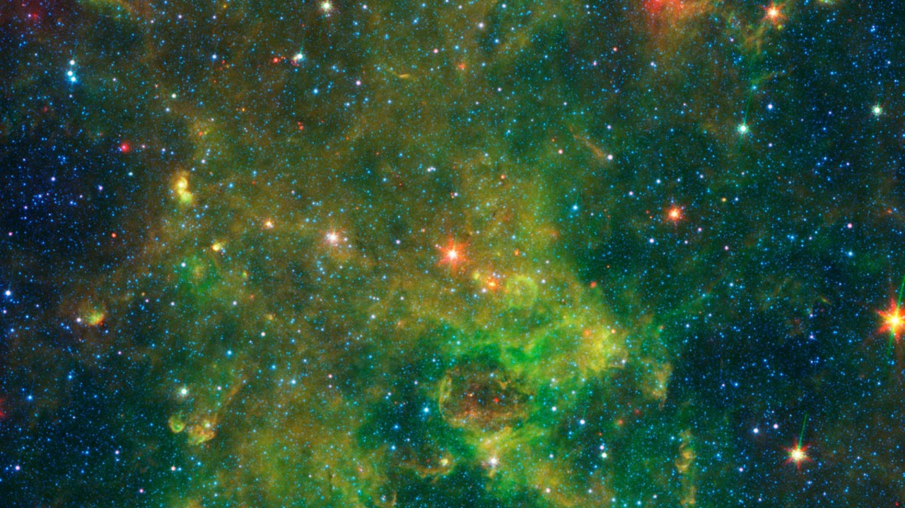

Astronomer
中島淳一 Jun-ichi Nakashima
電波天文学を専門に、進化した星の周囲に広がる分子ガスや天体メーザーを研究しています。
現在は、中国広東省の研究大学で教授として研究と教育に携わっています。日本で博士号を取得した後、米国のイリノイ大学、台湾の中央研究院、香港大学、ロシアのウラル連邦大学で研究を続けてきました。
一つの天体を長期間観測する一方、メーザーのデータベースを使って新たな観測対象も探しています。こうした研究を通じて、星がどのように物質を放出するのかを調べています。
研究のほかに、科学の話題や海外での研究生活、大学教育・研究文化について、文章やVoicyで発信しています。
Research Program
研究プロジェクト
恒星の最期を、分子ガスの動きから読み解く
星が放出するガスの形と運動は、その進化とどう結びついているのでしょうか。長年の観測研究を基礎に、学生・共同研究者と追究している三つの科学的な問いと、それらを結ぶ研究方法を紹介します。
総合レビュー / Featured Review
IRAS 19312+1950の正体は何なのか
2000年のメーザー発見から2026年の研究まで。進化星、原始星、恒星合体残骸、星形成環境という異なる解釈を、観測事実と未解決の問題からたどる総合レビューです。
26年間の研究史 全15章 参考文献25件

Research
研究成果
· 研究紹介
珍しい星を探す、電波と光の手がかり
星の周囲から届く電波の線幅と光度を組み合わせ、次に詳しく調べる天体を選ぶ手がかりを提案しました。
The Astrophysical Journalに掲載決定
2026年の論文 · 研究紹介
星を包むガスが形を変え始めるとき
メーザーの速度と赤外線SEDを組み合わせ、塵の放射は球対称モデルで説明できても、ガスの運動は単純な球対称膨張から外れる天体を調べました。構造変化の初期段階を探る研究です。
The Astrophysical Journal, 998, 27（2026）
2025年の論文 · 研究紹介
20年の電波記録で探る、ある天体の正体
新観測と過去約20年のメーザー記録を比べ、進化星にも若い星にも単純には分類できない天体の起源を考察しました。
The Astrophysical Journal, 981, 41（2025）
2025年の論文 · 研究紹介
三つの電波で探る、星を包むガスの動き
OHメーザーの主線と衛星線の速度範囲を比べ、星周ガスの複雑な運動と、星の進化を探りました。
The Astrophysical Journal, 978, 114（2025）
2024年の論文 · 研究紹介
星の最期に現れるジェットを探す
OHとH₂Oメーザーの速度を比較し、星の周囲の球対称な膨張から外れる運動を手がかりに、ジェットの候補を探しました。
The Astrophysical Journal Supplement Series, 270, 13（2024）
Research Watch
中島の研究ウォッチ
私が関心を持った、他の研究者による天文学・天体物理学の論文を紹介します。原著論文をもとに、研究の背景、主な結果、残された課題を専門外の方にも分かるようにまとめています。
Teaching
教育・講義
天文学研究への入り口：近代天体物理
異なる専門分野から天文学研究へ進む大学院新入生のために。観測量を物理の原理から理解し、英語で研究を説明し、問いを立てる基礎を紹介します。
電波天文学を教える
アンテナで受信した電波から画像やスペクトルを作る仕組みを扱う講義です。物理と数学を用いて、電波観測の基本を説明します。
観測データから宇宙を読み解く：天文データ解析実習
学部生がVLAの実観測データを点検・較正し、画像やスペクトルから物理を考察する実習。自分の判断を検証し、英語の科学レポートにまとめる研究体験を紹介します。
教科書の先にある宇宙：天文学・宇宙科学の最前線
学部1年生が、さまざまな分野の研究者から未解決の宇宙の問題を知る講義。星の晩年と天体メーザーを例に、これからの学びと研究のつながりを紹介します。
Writing & audio
発信・文章
-
Voicy｜中島淳一の天文屋日記
科学、研究、大学教育、社会や文化についての音声配信。
-
X
近況や最近の発信はこちらから。
-
note
Voicyで配信した放送の書き起こし記事を掲載しています。
-
過去のブログ
過去の記事を残したアーカイブです。
Research & Learning Resources
研究・学習に役立つ資料とツール
論文を探す、観測を計画する、基礎を学ぶ、解析を進める。目的に応じて選べる全152項目を、4つの分野にまとめました。
研究情報源・公開データ →
論文を探し、天体の情報を調べ、公開観測データを利用するための情報源です。ADS、SIMBAD、IRSA、CDMSなど、研究で役立つ主要なデータベースを紹介しています。
観測施設・観測計画 →
ALMA、FAST、すばる望遠鏡など、国内外の電波・光学・赤外線望遠鏡とVLBIネットワークを紹介しています。中国の主要観測施設や、観測時間の申請窓口もまとめています。
学術誌・総説・専門教材 →
ApJやA&Aなどの学術誌、ARA&Aをはじめとするレビュー誌を紹介しています。無料で読める定評ある専門教科書や講義ノートも、分野別に探せます。
研究・解析・執筆ツール →
CASAやRADMC-3Dなどの解析ソフトウェアに加え、ChatGPTなどの生成AI、Overleaf、GitHubなど、研究や論文執筆を支えるサービスを紹介しています。
計算技術ノート
RADMC-3Dの計算が長すぎるとき：クラウドCPUとHPCの選択肢 →
自宅PCでは時間のかかる放射輸送計算について、クラウドCPUやHPCの候補、実行手順と検証方法を整理しました。
About this site
この場所について
このサイトは、私が研究や読書等を通して学んだことや考えたことを少しずつ書き留めていく、インターネット上の私的な書庫です。
これまでに公表した研究成果とその背景に加え、関心を持って読んだ論文の紹介、講義の準備でまとめたノート、技術的な事柄のノート、読書の記録なども収めていきたいと考えています。
自分自身が折に触れて読み返し、考えを整理したり、さらに学びを深めたりできる場所にしていきたいと思っています。